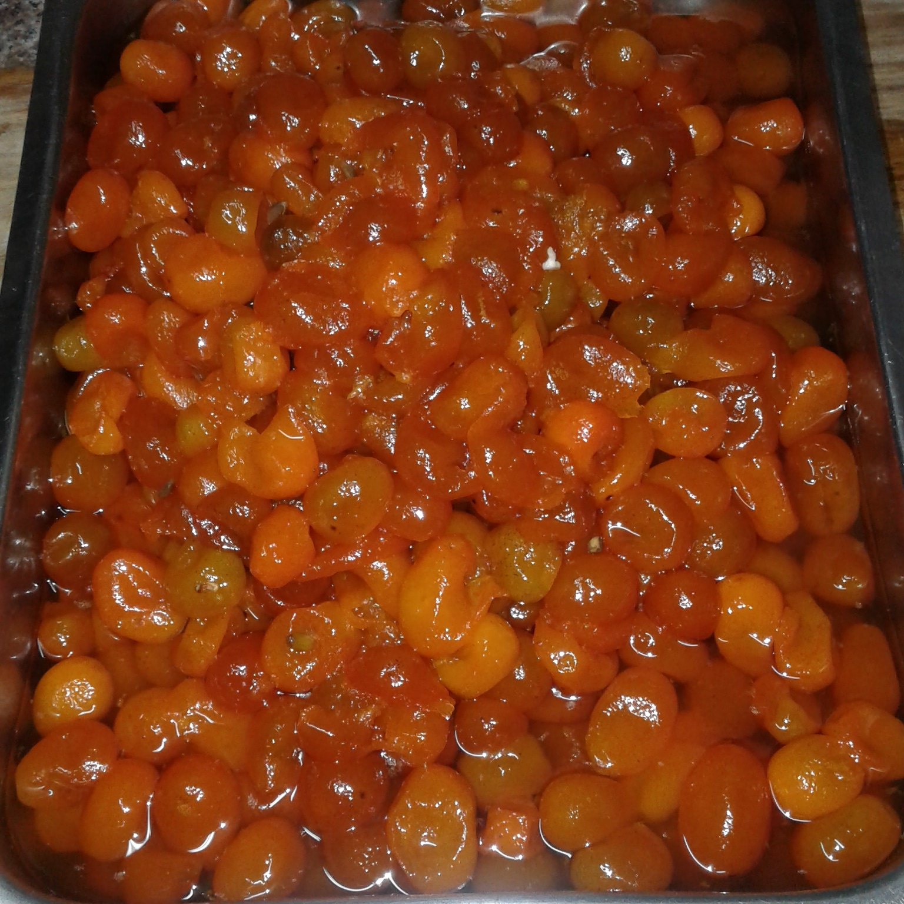
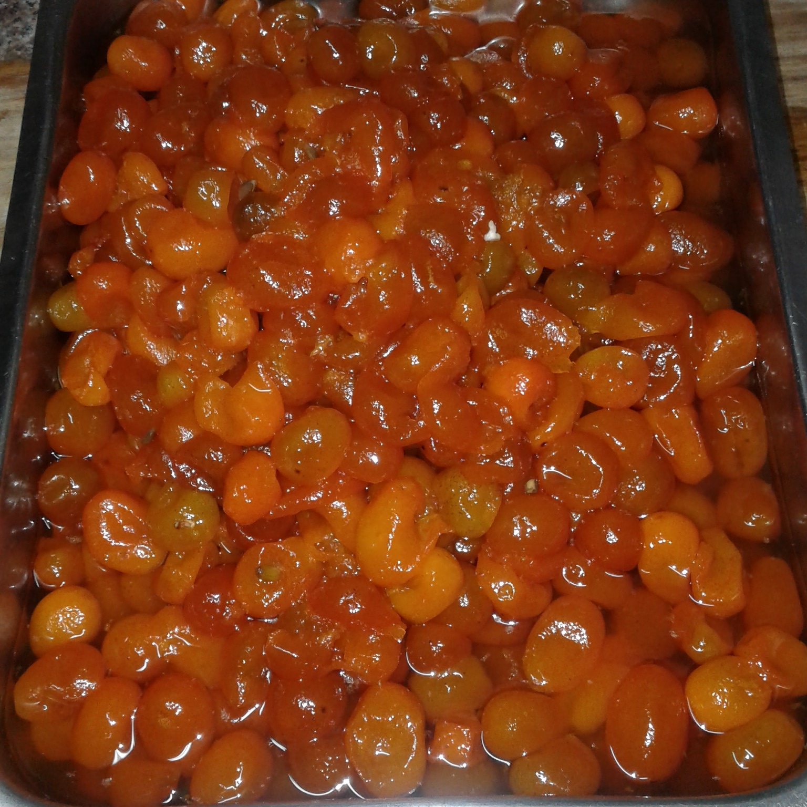
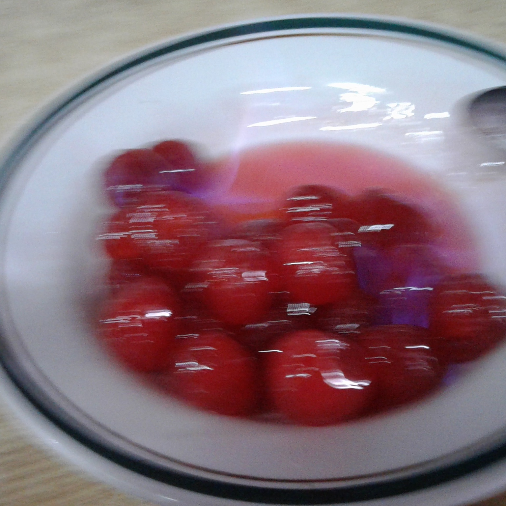
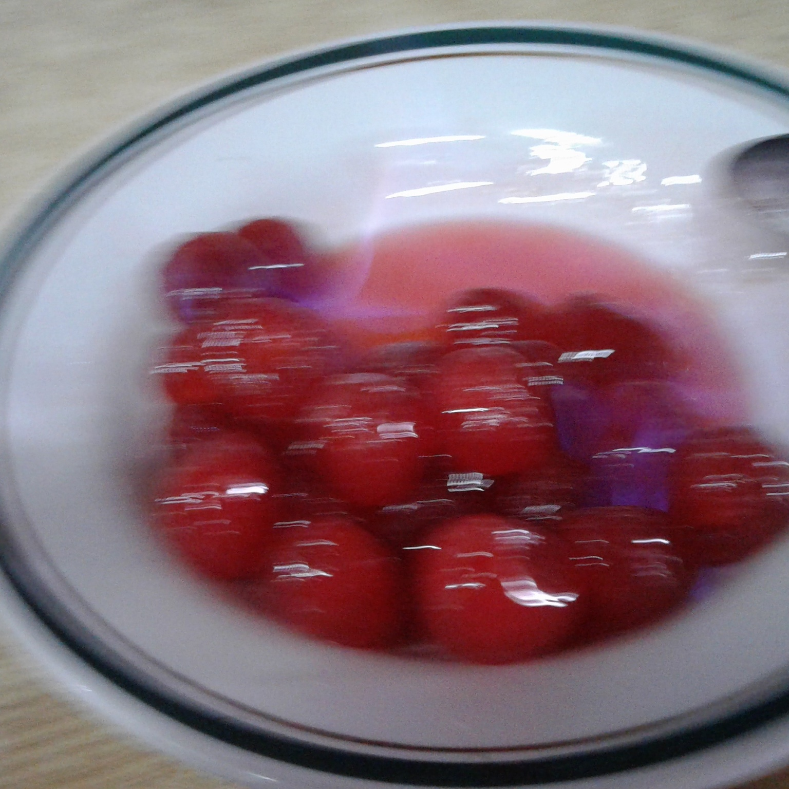

ESPECIALIDADES
QUINOTOS CASEROS AL RHUM, CON HELADO
LENTEJAS A CABALLO
PASTA CON CHICHIRI-CECI
MONDONGO A LA ITALIANA
RINONES AL VINO BLANCO
CALAMARETTIS A LA ESCARPETTA-
FUSILES AL FERRETTO
RANAS A LA PROVENZAL
CARACOLES A LA BORDALEZA
RABAS A LA CALABRIA
MERLUZA AL AJILLO
GAMBAS AL AJILLO
POSTRES
TIRAMISU CALABRES
POSTRE CHICHOLINA


 



 
